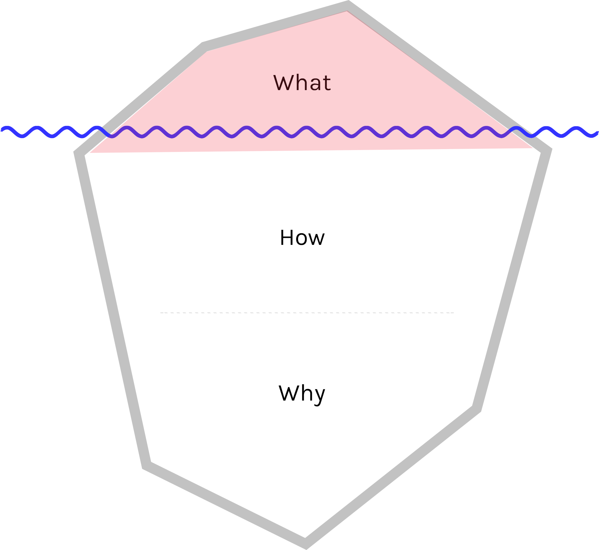
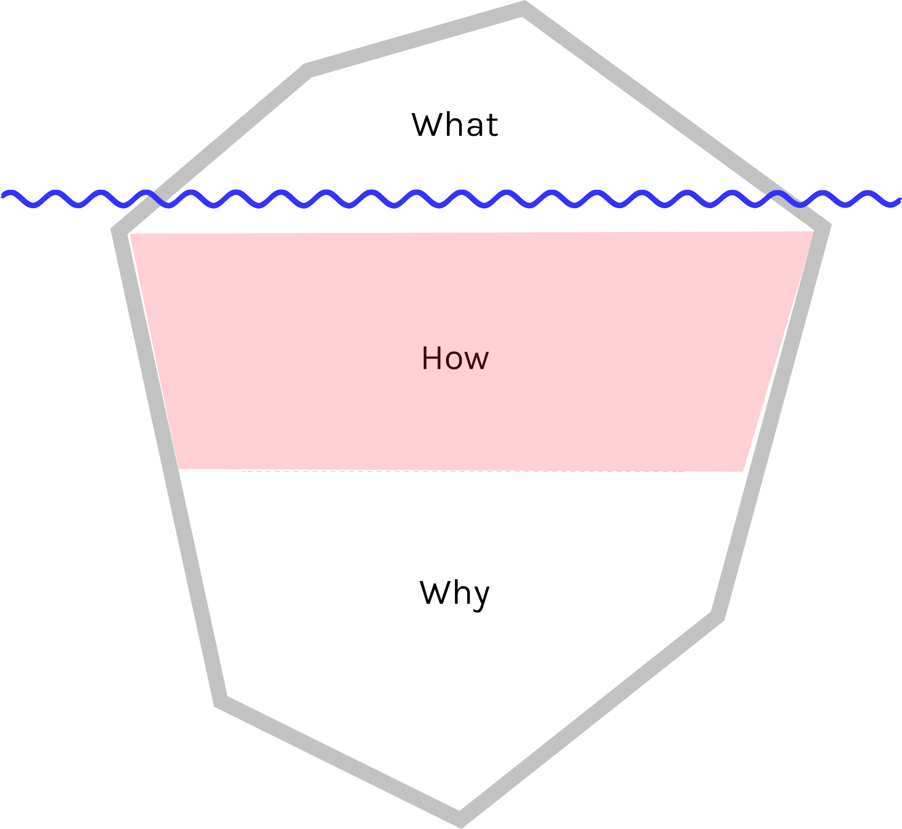
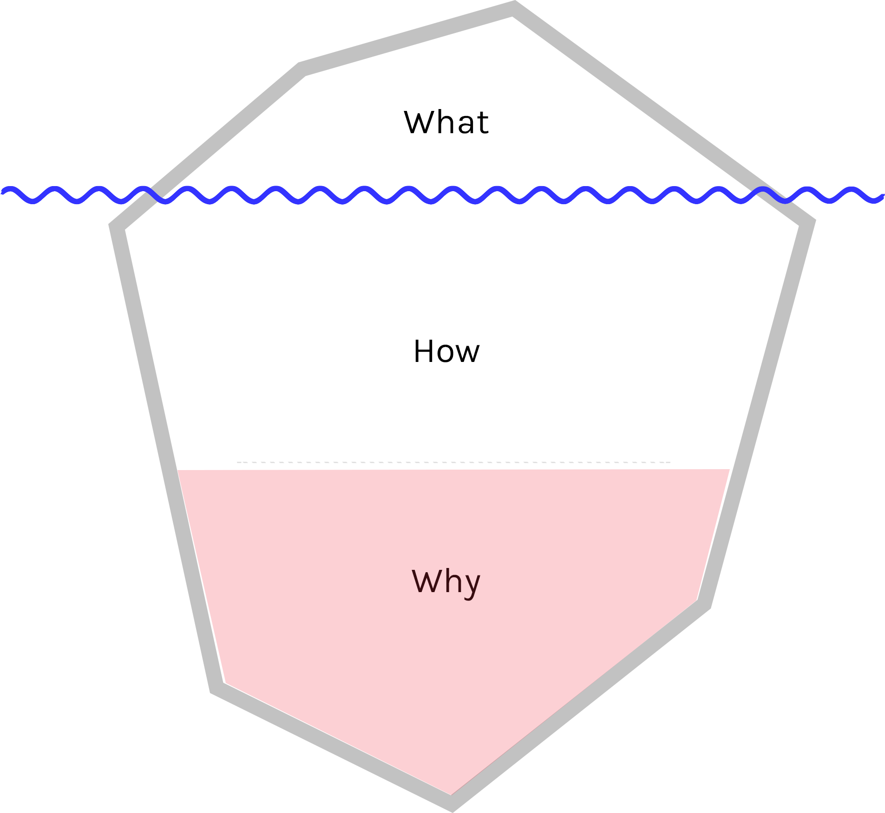

Creativity, how?
Cheesyness alert!
Everyone can be creative
It is a skill that can be improved, rather than a born-with-it talent.
Who am I?
- Hyper Island alumni
- UGL (Understanding group and leadership)
- Web developer
- Project of How
Outcome
- The creative mode
- Methods to get there (process)
- Methods to improve the process (reflection)
Hands up!
How many people...
- are actively thinking about how they do stuff?
- are doing this as a group exercise?
- have this as a scheduled part of the process?
The Iceberg

The Iceberg
The Iceberg
The Iceberg
What?
Good for
- Inspiration
- New associations
- Research (look outside your bubble and see what's going on)
But!
It's a bit like being a dog, chasing a car
As soon as the car stops, the dog don't know what to do with it
We should try to
lead the way
rather than
staying up to date with our competitors
Therefore we need to get autonomous
HOW?
Think about your process
rather than
your result
The creative state

John Cleese
"The creative state"
Open and closed mode
The happy kid
vs
The responsible adult
The happy kid
- Playful
- Curios
- Relaxed
- Joyous / Humorus
- Free from criticism, prestige, pressure
- No agenda, no musts
Why is this person important?
- It takes you to places you wouldn't normally go
- Curiosity poses a lot of interesting questions
- What if?
- What happens when?
- Let's imagine that...
- With criticism, ideas won't get far
Björk

About her songwriting
"...I would never let the analytical side of me in there,
because it can be very destructive."
That feeling
you get after one beer with a good friend
and absolutely no plans.
Moscow airport, no plans for hours
This is obviously nothing I recommend
Study: How Drinking Makes You More Creative
Note: 1 beer, not 2! It's all downhill from there.
But!
Nothing would get created with only this person inside your head.
Therefore we need

The responsible adult
- Your default mode at work
- Purposeful
- Active
- Slightly anxious
- Not very humorous
- Not creative!
Basically,
the person who gets
shit done
Björk again, on producing her songs
"...the studio process is very disciplined and focused."
To sum things up, we need both!
- Open mode when looking for a solution
- Once a solution is found, switch to closed mode
- Keep alternating throughout the process
- Looking at the compass vs walking
Methods
For groups or individuals
Preparation
- Isolate yourselves
- Create an "oasis" of space and time
- Define a clear start and end time (usually 1.5h)
- No other todo's for now, your emails can wait!
- Create an environment for trust and enjoyment for all
- Allow each other to be silly/stupid/illogical/wrong
Remember; this is a team effort!
- Hear people out
- Don't cling on to your own ideas
- Move the conversation forward together
- Build on each others ideas
- Unhappy with the direction? --> closed mode
And for God's sake
Bring Post-its!
- Works as documentation
- Gives you all a great overview
- Easy to rearrange/organize later
Double diamond
- Multiple sessions
- Applicable on large and small problems
Empty your brain
- Chances are, the first ideas that comes to mind aren't that original
- Yes and...
Sky is the limit
- Unlimited budget, time, skills, etc.
- Exaggerate, provoke, distort reality
- The "Intermediate impossible" - impossible now, but might lead to possible
- Create associations (elephant = gray and/or large)
- Rembember; yes and...
Lateral thinking

Edward de Bono
Lateral thinking
- Brains are, for good or bad, pattern makers
- It's easy to take the same direction as before
- To be creative, we need to approach problems from a new angle
- These methods are meant to provoke your brain out of these patterns
But!
Coming up with a unique solution doesn't mean it's good
For me, a creative solution must solve a problem better than before, in a new, smarter, cheaper, faster way
Therefore, do your research! Learn as much as you possibly can, about your field. It will definitely lead you in to new interesting ideas.
Understand the problem

A case study:
The discovery of graphene

The perfect storm of creativity
- Curiosity
- Endurance
- Knowledge
One more thing...
Do not stress
the solution!
Tolerate the discomfort of not having one
Too many bad projects go this path
WHY?
Reflection
Why are we doing things the way we are?
There is no perfect process - but we should try to get there
Chances are;
that your company does not actively reflect
upon how things are done - AT ALL!
The #1 reason for that, I think, is
No one questions existing work culture
5 monkeys in a room

What does this mean
People are most likely:
- too new and scared to question things
- or too institutionalized (things have always been this way)
Some researchers say:
You can boost your productivity by 20% just by reflecting upon how you are doing things
Easiest way of doing this
start/stop/continue
And one last thing; Please allow yourselves to be
silly/stupid/illogical/
wrong/different
Ken Robinson says
If you're not prepared to be wrong, you will not come up with anything original
Corporations generally stigmatizes being wrong
Project of How
A place to collect and share methods